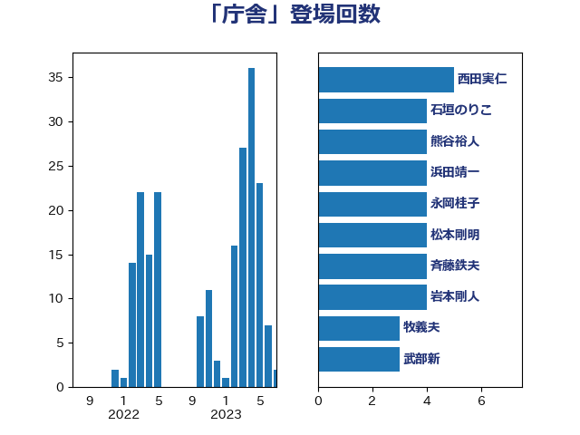

単語「庁舎」

| 西田実仁 | 公明党 | 5 回 |
| 石垣のりこ | 立憲民主党 | 4 回 |
| 熊谷裕人 | 立憲民主党 | 4 回 |
| 浜田靖一 | 自由民主党 | 4 回 |
| 永岡桂子 | 自由民主党 | 4 回 |
| 松本剛明 | 自由民主党 | 4 回 |
| 斉藤鉄夫 | 公明党 | 4 回 |
| 岩本剛人 | 自由民主党 | 4 回 |
| 牧義夫 | 立憲民主党 | 3 回 |
| 武部新 | 自由民主党 | 3 回 |
| 加藤勝信 | 自由民主党 | 3 回 |
| 井野俊郎 | 自由民主党 | 3 回 |
| 中川貴元 | 自由民主党 | 3 回 |
| 野田国義 | 立憲民主党 | 2 回 |
| 緑川貴士 | 立憲民主党 | 2 回 |
| 米山隆一 | 立憲民主党 | 2 回 |
| 福田昭夫 | 立憲民主党 | 2 回 |
| 田村貴昭 | 日本共産党 | 2 回 |
| 松野明美 | 日本維新の会 | 2 回 |
| 後藤茂之 | 自由民主党 | 2 回 |
| 山田勝彦 | 立憲民主党 | 2 回 |
| 吉田とも代 | 日本維新の会 | 2 回 |
| 古賀之士 | 立憲民主党 | 2 回 |
| 佐々木さやか | 公明党 | 2 回 |
| 井上哲士 | 日本共産党 | 2 回 |
| 上田勇 | 公明党 | 2 回 |
| 高木真理 | 立憲民主党 | 1 回 |
| 須藤元気 | 無所属 | 1 回 |
| 阿部司 | 日本維新の会 | 1 回 |
| 鈴木俊一 | 自由民主党 | 1 回 |
| 金子恭之 | 自由民主党 | 1 回 |
| 野田聖子 | 自由民主党 | 1 回 |
| 輿水恵一 | 公明党 | 1 回 |
| 西村明宏 | 自由民主党 | 1 回 |
| 西岡秀子 | 国民民主党 | 1 回 |
| 菅家一郎 | 自由民主党 | 1 回 |
| 芳賀道也 | 国民民主党 | 1 回 |
| 美延映夫 | 日本維新の会 | 1 回 |
| 竹詰仁 | 国民民主党 | 1 回 |
| 福重隆浩 | 公明党 | 1 回 |
| 漆間譲司 | 日本維新の会 | 1 回 |
| 渡辺創 | 立憲民主党 | 1 回 |
| 浅野哲 | 国民民主党 | 1 回 |
| 河野太郎 | 自由民主党 | 1 回 |
| 柿沢未途 | 無所属 | 1 回 |
| 柳ヶ瀬裕文 | 日本維新の会 | 1 回 |
| 本田太郎 | 自由民主党 | 1 回 |
| 末松信介 | 自由民主党 | 1 回 |
| 木原誠二 | 自由民主党 | 1 回 |
| 新妻秀規 | 公明党 | 1 回 |
| 岸真紀子 | 立憲民主党 | 1 回 |
| 岸田文雄 | 自由民主党 | 1 回 |
| 岩渕友 | 日本共産党 | 1 回 |
| 岡田直樹 | 自由民主党 | 1 回 |
| 小森卓郎 | 自由民主党 | 1 回 |
| 大串正樹 | 自由民主党 | 1 回 |
| 堀内詔子 | 自由民主党 | 1 回 |
| 和田政宗 | 自由民主党 | 1 回 |
| 保岡宏武 | 自由民主党 | 1 回 |
| 佐藤英道 | 公明党 | 1 回 |
| 伊藤孝恵 | 国民民主党 | 1 回 |
| 井原巧 | 自由民主党 | 1 回 |
| 三浦信祐 | 公明党 | 1 回 |
| おおつき紅葉 | 立憲民主党 | 1 回 |